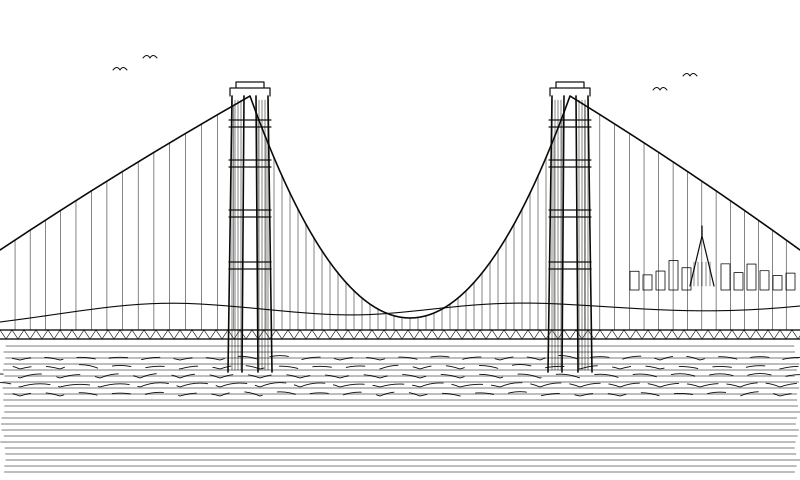

IV · Post-AI
After the models
Models can now write, see and speak. What they can't do on their own is stay true to the body. The work above is built to keep that loop closed.

II · Origins
Delhi
28.61° N 77.21° E

San Francisco
37.77° N 122.42° W
III · Opera
From the first questions in Delhi, to language models in the clinic, to the niche formats medicine actually runs on.
I
It started in Delhi with biology, mathematics and code, and one question: can a body be written down precisely enough to compute?
II
Language models, wired into the clinic.
Clinical intake by conversation. A language model interviews the patient and writes a structured history, with every field traceable to what was said.
FHIR R4 · SNOMED CT · ICD-10
Ambient notes that show their sources. The visit becomes a note, and each sentence links back to the moment in the audio it came from.
WAV · HL7 v2 · FHIR DocumentReference
III
cDNA and FASTQ, VCF, ECG, EEG, DICOM: niche medical data, taken seriously.
From cDNA library to published dataset. Raw FASTQ in; aligned, quantified, annotated and FAIR-packaged for GEO and SRA out, with provenance on every step.
FASTQ · BAM · GTF · h5ad · MINSEQE
Rare-disease variant interpretation: a VCF in, ranked candidates out, each with its ACMG evidence written down.
VCF · HGVS · ClinVar · HPO
Arrhythmia detection for single-lead wearables, trained on public ECG corpora and built to explain every flag it raises.
WFDB · EDF · HL7 aECG
Seizure forecasting from long-term EEG: a patient-specific model that learns one brain's pre-ictal signature.
EDF · BIDS · NWB
CT and MRI to simulation-ready anatomy: segment, mesh and hand the geometry to a solver. The first step of any organ twin.
DICOM · NIfTI · STL · VTK
IV
Everything above, in one place.
A cyber-medical research workspace: turn what the body emits into models you can reason with, and keep every model tied to the signal that made it.
DICOM · FHIR · FASTQ · EDF · SBML
IV · Post-AI
Models can now write, see and speak. What they can't do on their own is stay true to the body. The work above is built to keep that loop closed.